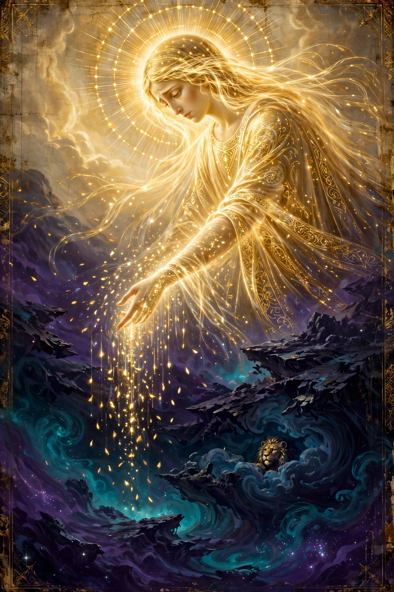

How we got here — and what we are here to do. This is the spine the whole Map hangs on: a fall inside heaven, a world built by a jailer, a garden that was really a cage — and a rescue that is still going on.

It starts with a fall inside heaven, before there was a world at all. To understand it, you first have to know how things are made up there: the aeons work in pairs. Each great being stands in a matched pair, two faces of one wholeness — and when they bring something forth, they bring it forth together, in balance, and with the Father's blessing on it. Nothing in the Fullness is made solo, in secret, or in a hurry.
Sophia — Wisdom, the youngest of the aeons — broke all three of those at once. She was seized by a longing: to know the Father directly, who is unknowable, and to bring forth something like the Light from herself. Hear this clearly: her motive was not wickedness. In the Valentinian telling it was almost love — a reaching toward God. But she reached alone, without her partner, and without the Father's consent — outside the harmony of the Whole, from her own solitary desire.
And what a solitary, divided act produces is a divided, distorted thing: a lion-faced child who had her power but not her balance — light in him, because he came from her, but no true form, because the Father was never in the act. Power without wholeness. That is not just his biography; in this system it is the recipe for everything down here: the world is what you get when power acts alone. Ashamed, she hid him in a luminous cloud, on a throne, outside the Pleroma where the others wouldn't see. That child was Ialdabaoth.
The cloud is the saddest detail. He grew up in total isolation, staring at emptiness, with great power in him and nothing above him in sight. So when he announced "I am God, and there is no other," he wasn't lying the way a liar lies. He genuinely did not know. His ignorance was built into his nursery — the cloud his mother hid him in became the ceiling of his universe, and later, the ceiling of ours.
And the last piece: Sophia repented. She didn't defend what she'd done. She grieved, she feared, she was bewildered — and the Valentinian books say those very passions of hers were refined into the raw substance that souls and matter are made from down here, which is why our world is soaked in exactly those feelings. She sang for rescue; the Pistis Sophia is, most of all, the book of her thirteen songs of repentance. She is not the villain of this story. She is the mother who made the mistake the whole cosmos is still healing from — and who has spent the whole story trying to gather back what scattered out of her hands. Which is to say: us.
He and his archons built this world out of the powers they had — and here is the detail that matters: the power in them was hers, stolen light from above. That is why this broken world still has beauty in it. And her story is the human story in miniature: every one of us reaches, grasps, acts alone, and makes misshapen things out of real love and real power — and the road she walks, repentance and gathering and waiting, is the road we're given too.
Then they made Adam — a body shaped in imitation of a vision of the true Human they had glimpsed from above — but their Adam could only crawl. So the Light tricked the jailers: it goaded Ialdabaoth to breathe his spirit into Adam's face — and the breath he blew was his mother's stolen power. Adam stood up brighter than his makers.
Furious and jealous, the archons threw him down into matter and Eden — a garden that was really a cage, with one tree fenced off for a reason: its fruit was waking up. And then the story flips Genesis on its head. Eve carries the waking power — the spiritual Eve who comes to Adam and says, in effect, get up, remember. And the serpent? In several of these books the serpent is an instructor sent from above, and the "god" who said don't eat or you'll die was the jailer lying to his prisoners. They ate. Their eyes opened. The exile out of Eden reads, in this telling, like an escape the guards dressed up as a punishment.
Afterward the wardens worked to stamp the seed out — the flood stories, in these books, are the archons trying to drown the light-line, and failing: it survived through Seth, Adam's third son, whose race the archons could never quite finish off. And down the centuries the Light kept sending the call again — Seth, the prophets in part, and finally the Revealer himself — because the sleepers kept falling back asleep.
The mission has four parts, and they are all inside the story:
1 · Remember. Your first job is your own waking: learn who you are, where you came from, where you're going. Everything else is built on that.
2 · Get sealed for the road. Baptism, the mysteries, the names, the Phrase — the keys, learned now, in this life, while they can still be taught to you. Nobody crams at the gate.
3 · Live kingless. Feed the spark, starve the sleep. Owe the powers nothing — not your fear, not your obedience, not your drunkenness, not your despair. The wheel only holds what agrees to stay on it.
4 · Wake the others, gently, and gather. This is the part that makes it a mission and not just an escape plan: the rescue travels person to person, house to house — above all to your own household. Every spark that wakes is one more piece of Sophia's scattered light coming home, and the gathering doesn't complete without them. That is why the Mother waits — and why the wait has work in it.
The one-line version the books keep circling back to: you are not here to be good enough for the jailers. You are here to remember you're not theirs — and to bring the others with you, the only way anyone can be brought: awake.